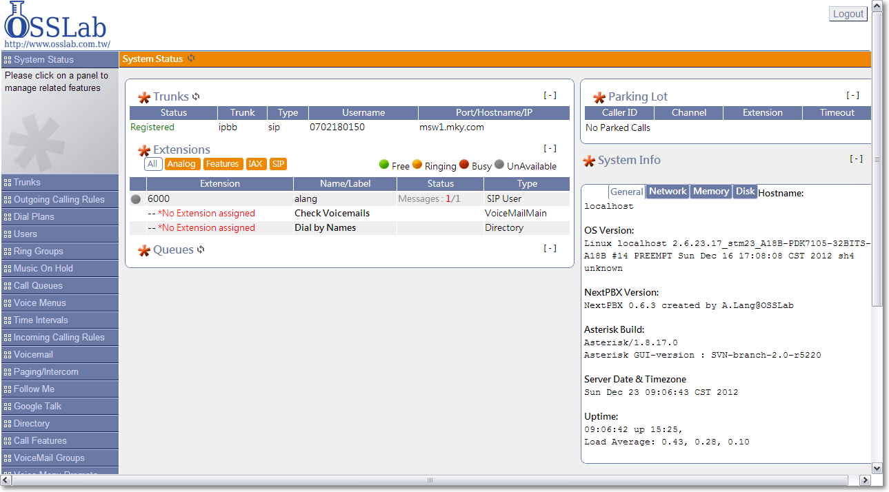
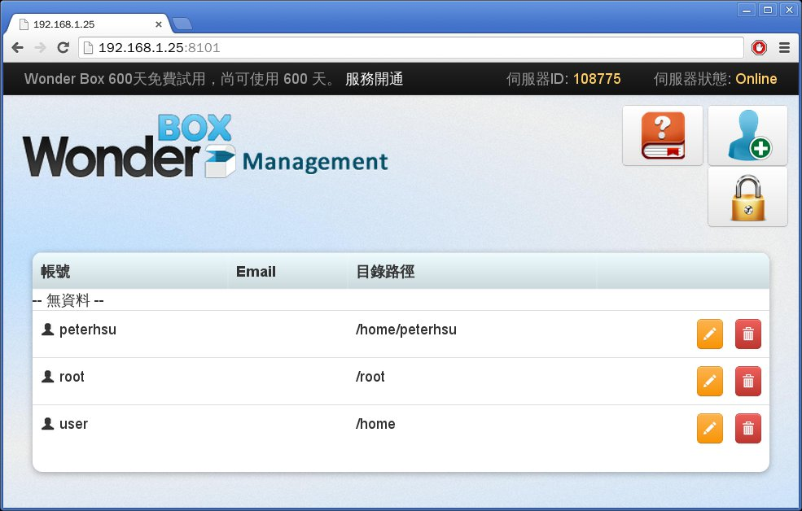
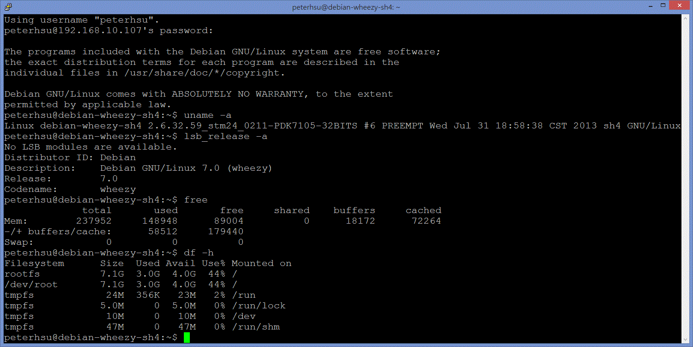

Debian GNU/Linux
on
NextVODBox
A FREE set-top box base on SuperH architecture
(Raspberry Pi Taiwanese version?)
Peter Hsu
Peter Hsu
- A Debian GNU/Linux user
- A free & open source software user
- A student from Yuan Zu University
- One of the main deb package builders in NextVODBox developer group
- http://forum.cse.yzu.edu.tw/rpi/ maintainer
(Raspberry Pi OS download mirror) - http://forum.cse.yzu.edu.tw/debian-sh4/ maintainer
(Repositry and websites, manual)
What is the NextVODBox?
Oh!
It's a FREE digital TV set-top box,
which based on the SH4.

SuperH / SH
"SuperH(or SH) is a 32-bit reduced instruction set computer (RISC) instruction set architecture (ISA) developed by Hitachi. It is implemented by microcontrollers and microprocessors for embedded systems. The SH-3 and SH-4 architectures support both big-endian and little-endian byte ordering (they are bi-endian)." - Wikipedia
7/30/2010
Spec
CPU: STMicroelectronics ST-9150BUC
RAM: NANYA NT5TU64M16GG-AC (DRAM DDR2 64Mx16 PC800 BGA) x 2
Storage: Samsung NCDOM08GMS-MLC
Ethernet: VIA VT6113 10/100 base-TX PHY chip
Flash: Winbond 25Q80 1MB Spi Flash
Board: STMicroelectronics PDK7105-SDK board
Power: 5V x 2A = 10W (max)
{kind=link}
Operating systems
- Arch Linux
- sh4twbox
- Fedora 9* (no webpage, you can download from sh4twbox project's download list)
- NextPBX(Asterisk)
- NextNAS (Known as WonderBOX, base on NextPBX, sh4twbox or Debian)
- Debian GNU/Linux Wheezy sh4 for NextVODBox
NextPBX screenshot

WonderBOX screenshot

Feature
- Green
- No noise
- Low power
- Small size
- FREE
Application
- coding
- arduino
- web camera
- vpn/dhcp/nat/proxy/AP
- VoIP/BT/Web/File server
- audio/video* player (includes radio)
- Learning unix-like os
Let's take a look!
 Terminal login screenshot
Package repositry
http://forum.cse.yzu.edu.tw/debian-sh4/ all
http://ftp.tw.debian.org/debian/ main contrib non-free
http://download.si-linux.co.jp/debian-sh/wheezy-sh4/ main
http://1.34.239.30/wheezy-sh4/debian* main
1419 debs in our repo now! (more than 1k debs are sh4 only)
Package Building
-
apt-get build-dep XXX (build package's dependencies)
...... the package cannot be found ...... but it is not installable ......cannot be satisfied ...... but is not going to be installed ...... Failed to satisfy Build-Depends dependency ...... - apt-get -b source XXX (fetch the source & build the binary package) ...... or ......
- apt-get source XXX (fetch the source and extract only) loop:
- hacking time! (because it cannot be built automatically)
- debuild (hope it works now! if it failed, go to loop ...)
- need dpkg-dev devscripts
- Depends on si-linux repositry
- Many packages require manual intervention
deb-auto-build
https://github.com/PeterDaveHello/deb-auto-build
#!/bin/bash -x
REPO="dists/wheezy-sh4/main/binary-sh4"
function build_sub_package()
{
while read package_a; do
build_a_package $package_a
done
}
function build_a_package()
{
build_a_package_dep $1;
echo "now building $1 ...";
tmux rename-window "building $1"
apt-get -b source "$1" \
&& tmux rename-window "moving $1" \
&& mv *.deb ../apt-repo/${REPO} \
&& tmux rename-window "rebuilding repo" \
&& cd ../apt-repo \
&& dpkg-scanpackages ${REPO} > ${REPO}/Packages \
&& gzip -c ${REPO}/Packages > ${REPO}/Packages.gz \
&& tmux rename-window "updating apt db" \
&& apt-get update \
&& cd -
rm -rf *$1*
}
function build_a_package_dep()
{
echo "now building $1 dep ...";
$?=123
until [ "$?" -eq 0 ]
do
tmux rename-window "building-dep $1"
apt-get build-dep "$1" --force-yes -y 2>&1 | grep 'cannot be found' | cut -d ' ' -f 12 | build_sub_package
apt-get build-dep "$1" --force-yes -y 2>&1 | grep 'but it is not going to be installed' | cut -d ' ' -f 5 | build_sub_package
apt-get build-dep "$1" --force-yes -y 2>&1 | grep 'but it is not installable' | cut -d ' ' -f 5 | build_sub_package
apt-get build-dep "$1" --force-yes -y 2>&1 | grep 'Failed to satisfy Build-Depends dependency' | cut -d ' ' -f 9 | build_sub_package
apt-get build-dep "$1" --force-yes -y
done
}
if [ "$#" -lt 1 ]; then
exit
elif [ "$#" -eq 1 ]; then
if [ "$1" == "--build-dep-only" ]; then
exit
fi
fi
tmux rename-window "updating apt db"
apt-get update
tmux rename-window "upgrading packages"
apt-get upgrade --force-yes -y
if [ "$1" == "--build-dep-only" ]; then
shift
for packages in $@
do
build_a_package_dep $packages
done
else
for packages in $@
do
build_a_package $packages
done
fi
tmux rename-window "Done."
*Replaced packages, apt-get build-dep may not work!
*E: Build-Depends dependency for fp-compiler cannot be satisfied because the package fp-compiler cannot be found
distcc compile
compile nginx benchmark:
- Without distcc:
14974.734067 secs - With distcc: (parameter, number of machines, how much faster)
7333.443333 secs, -j9, 3 machines, 2.042 times faster 6438.295988 secs, -j12, 4 machines, 2.326 times faster
Repositry Building
APT Archive Types:
| archive style | apt line | apt-pinning | secure APT | status |
| official archive | "deb http://example.tw/deb stable main" | Yes | Yes | preferred |
| trivial archive | "deb http://example.tw/deb ./" | No | Yes | deprecated |
- The easiest way: dpkg-scanpackages*
scan directories and create Package file - apt-ftparchive
- reprepro / mini-dinstall / debarchiver / debpool /DebMarshal
- Debian Archive Kit / mini Debian Archive Kit
Kernel
- Built by cross compiler
- Current version: 2.6.32.59
Pictures
By: 呂樺
By: 呂樺
By: 劉俊宏
By: 侯國賓
By: 吳笑綠
By: 吳笑綠
By: 吳笑綠
Advised links
- sh4twbox
https://code.google.com/p/sh4twbox/ - NextVOD unit Hacking - 網樂通改機
http://nextpbx.osslab.com.tw/ - 網樂通改機俱樂部(Facebook Group)
https://www.facebook.com/groups/477359555618518/ - Debian Wheezy sh4 for 網樂通(NextVODBox)
http://forum.cse.yzu.edu.tw/debian-sh4/